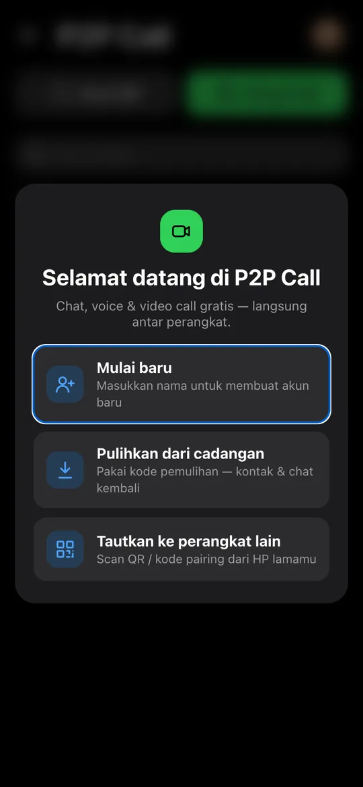
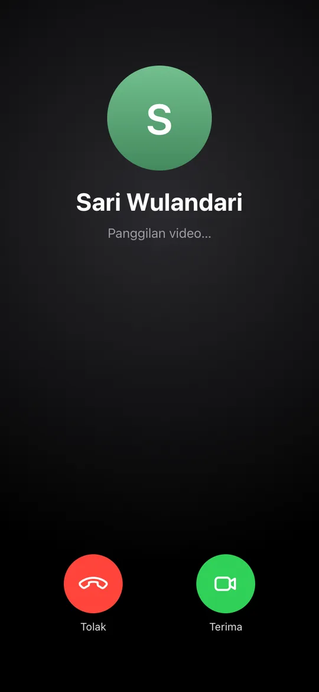

Chat & video call gratis, langsung antar perangkat.
Chat dan panggilanmu mengalir langsung antar perangkat — tidak disimpan di server mana pun. Tanpa nomor HP: tambah teman cukup scan QR. Pakai di Android, iPhone, atau laptop.
Langsung antar perangkat.
Bukan lewat server.
Di aplikasi chat biasa, pesan dan panggilanmu melewati — dan sering disimpan di — server perusahaan. P2P Call bekerja seperti telepon langsung: server hanya memperkenalkan kedua HP, lalu menyingkir.
- Pesan tidak disimpan di server. Hanya diteruskan seketika, lalu tersimpan di HP pengirim & penerima saja.
- Panggilan 1:1 tersambung langsung (WebRTC P2P, terenkripsi DTLS-SRTP) — suara & video tidak melewati server kami.
- Tidak ada akun pusat. Tanpa nomor HP, email, atau kata sandi — identitasmu kode acak di HP-mu.
- Group call (3 orang atau lebih) memakai relay terenkripsi yang hanya meneruskan, tidak merekam.
Semua yang kamu butuhkan untuk tetap terhubung
Dirancang sederhana seperti FaceTime & WhatsApp — tanpa registrasi, tanpa nomor telepon.
Video & voice call 1:1
Tersambung langsung antar perangkat (peer-to-peer). Gratis, berapa lama pun.
Group call
Pilih beberapa kontak, semua berdering sekaligus. Tambah peserta kapan saja di tengah panggilan.
Chat dengan centang
Terkirim, sampai, dan dibaca — plus riwayat panggilan di dalam chat dan pencarian pesan.
Tambah teman via QR
Tidak perlu nomor HP atau email. Scan QR teman, nama kalian langsung saling muncul.
Tetap berdering
Panggilan & pesan tetap masuk walau aplikasi ditutup — di Android dengan nada dering bawaan HP, di versi web lewat notifikasi browser.
Cadangan terenkripsi
Ganti HP atau instal ulang? Pulihkan kontak & chat dengan kode pemulihan. Server tidak bisa membacanya.
Mulai dalam 1 menit
Tanpa formulir, tanpa verifikasi SMS.
Pasang & isi nama
Pasang APK atau buka versi web, lalu masukkan nama. Kamu langsung dapat kode & QR sendiri.
Scan QR teman
Tekan Scan QR dan arahkan ke QR teman. Kalian otomatis saling tersimpan sebagai kontak.
Chat & telepon
Ketuk kontak untuk chat, voice call, atau video call. Pilih beberapa kontak untuk group call.


Apa yang (tidak) disimpan
Server kami hanya tahu sesedikit mungkin untuk mempertemukan dua perangkat.
Memasang di Android
- Ketuk Unduh untuk Android dan buka file p2pcall.apk.
- Bila diminta, izinkan Pasang aplikasi tidak dikenal untuk browser/File Manager.
- Buka P2P Call → isi nama → aktifkan izin di ☰ → Izin agar panggilan berdering saat aplikasi ditutup.
Pembaruan otomatis
- Tampilan & fitur baru diperbarui otomatis tanpa unduh ulang.
- Saat ada versi aplikasi baru, muncul tawaran Perbarui — aplikasi mengunduh & memasangnya sendiri.
- Aktifkan Cadangan otomatis agar data aman saat ganti HP.
Versi web: iPhone, laptop & PC
- Buka p2pcall.zonegoh.workers.dev di Chrome, Edge, Opera, atau Safari.
- Ketuk Aktifkan notifikasi agar panggilan & pesan tetap masuk saat ditutup. Cek di ☰ → Notifikasi → Kirim notifikasi uji.
- Pasang sebagai aplikasi: tombol Pasang (Chrome/Edge), atau di iPhone Safari → Bagikan → Tambahkan ke Layar Utama — wajib di iPhone agar notifikasi masuk.
Pertanyaan umum
Benar-benar gratis?
Ya. Tidak ada biaya, langganan, atau iklan. Panggilan 1:1 berjalan langsung antar perangkat sehingga tidak membebani server.
Apakah butuh internet?
Ya, Wi-Fi atau data seluler. Video call memakai kuota seperti aplikasi video call lain; voice call jauh lebih hemat.
Bagaimana dengan iPhone?
Pakai versi web di Safari, lalu Bagikan → Tambahkan ke Layar Utama. Buka dari ikon di Layar Utama dan aktifkan notifikasi (iOS 16.4 ke atas) agar panggilan & pesan tetap masuk saat ditutup.
Apa bedanya aplikasi Android dengan versi web?
Fiturnya sama dan bisa saling menelepon. Aplikasi Android bisa memunculkan layar panggilan penuh & nada dering HP walau terkunci; versi web memakai notifikasi browser — ketuk notifikasinya untuk menjawab.
Kenapa tidak ada di Play Store?
APK disediakan langsung agar bisa dipakai siapa saja dengan cepat. File ditandatangani resmi dan pembaruan diverifikasi (SHA-256) sebelum dipasang.
Bagaimana kalau saya ganti HP?
Aktifkan Cadangan otomatis dan simpan kode pemulihan. Di HP baru pilih Pulihkan dari cadangan — kode, kontak, dan chat kembali. Atau tautkan langsung lewat Tautkan perangkat lain.
Siap terhubung?
Pasang sekarang, scan QR teman, dan langsung telepon.